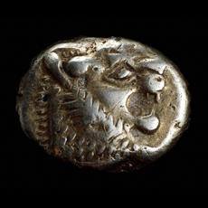

| |
The Department of
Coins and Medals holds the national collection of coins, banknotes and
commemorative and art medals. Coins and medals have had a place in the
British Museum since its earliest days - over 20,000 were included in
the collections acquired in 1753 under the provisions of Sir Hans Sloane's
will. Although not a coin specialist, Sloane's judicious acquisition
of ready-made earlier collections produced a wide-ranging cabinet of
Greek, Roman, British, and Islamic coins. His collections also included
coins that were, for him, contemporary, such as the emergency 'Gunmoney'
issued by James II during his attempt to regain the throne of England
in 1689-90. The opportunity was also taken to incorporate into the new
museum an even older collection formed by the antiquary Sir Robert Cotton
(1571-1631): several of the Anglo-Saxon coins from his collection are
still unique.
To these foundation
collections the Museum added a number of large numismatic acquisitions
in the 18th and 19th centuries. Important classical collections were
acquired by bequests, such as those of the Reverend C. M. Cracherode
in 1799 and Richard Payne Knight in 1824. The collection of Sarah Sophia
Banks, given to the Museum by her brother Sir Joseph Banks in 1818,
included coins of the newly independent United States of America, acquired
as they were issued. The collection of King George III, acquired in
1824, included many important coins and medals, but it broke new ground
with its significant series of German silver thalers. The foundation
of the rich oriental collection was laid by William Marsden's gift of
his outstanding collection in 1834. He had worked in Sumatra and his
collection included that of Robert Ainslie, British ambassador at Constantinople.
From an early stage
the coins and medals collection had formed part of the Department of
Manuscripts (with their inscriptions, coins were classed as metal manuscripts).
In 1807, however, it was moved to the Department of Antiquities, where
successive Keepers, Taylor Combe and Edward Hawkins, took a special
interest. Hawkins, in fact, advised the trustees that the Museum should
aim at completeness in the national series, a principle adhered to until
the present day. In 1860 a separate Department of Coins and Medals was
created. The pace of acquisition increased, with further generous donations,
such as the Cuerdale Viking treasure given by Queen Victoria, matched
by active purchasing of both collections and individual pieces.
1 of 3
1
- 2 - 3
|
|

Electrum 1/6 stater, Lydian, about 650-600 BC, From western modern
Turkey. One of the very earliest coins.
|
|
|
|